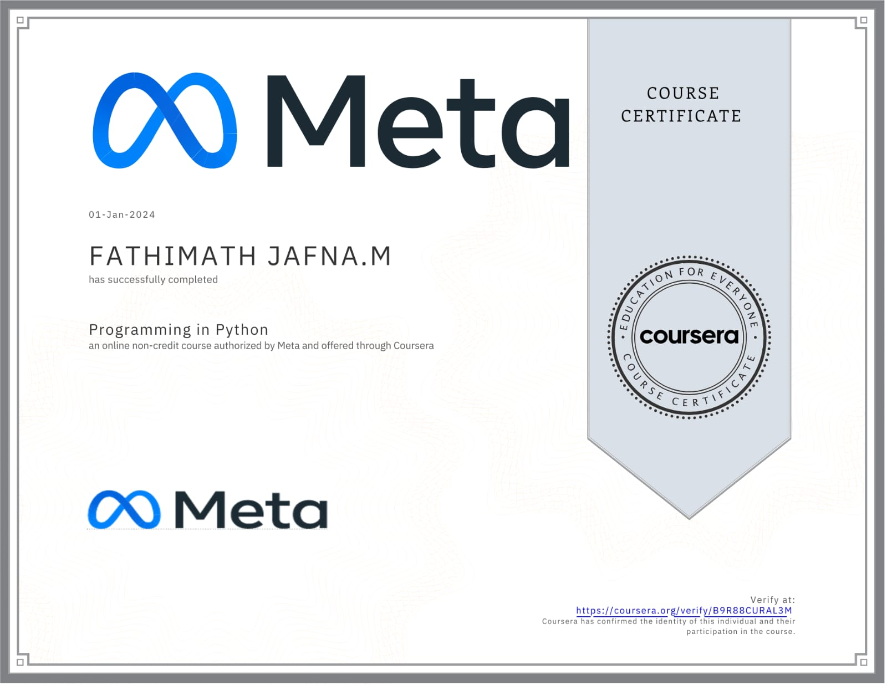
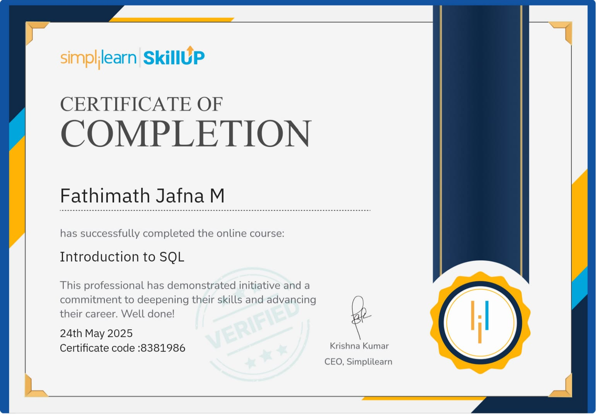
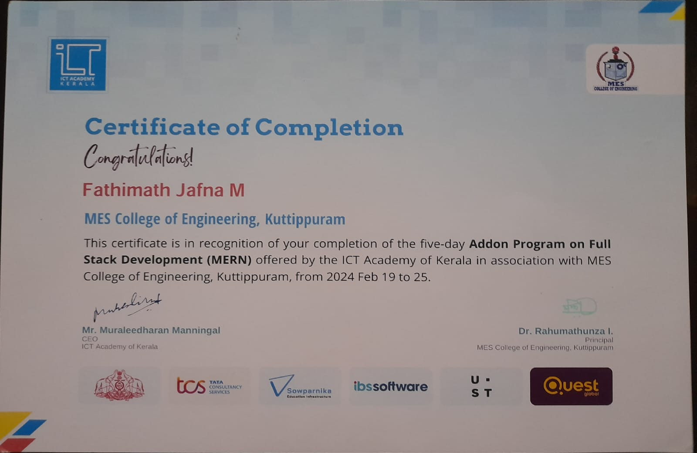

I am a highly motivated Computer Science graduate from MES College of Engineering, Kuttippuram, with a CGPA of 8.47. My academic journey has been shaped by a strong interest in building intelligent, user-focused systems and solving real-world problems through technology. I possess a solid foundation in programming, data structures, and software development principles, which I continuously sharpen through projects, certifications, and hands-on learning.
My technical experience spans across full-stack development and machine learning. I have built a MERN-based Skill Alignment and Networking Platform that allows users to connect through shared career goals, and I’ve also developed a Cyberbullying Detection System using BERT and VADER sentiment analysis to classify harmful content online. These projects reflect not only my coding proficiency but also my passion for using technology to drive social impact.
Beyond technical expertise, I take pride in my collaborative spirit and leadership abilities. As a volunteer with NSS Unit 191 and a program facilitator at TinkerHub MESCE, I have contributed to social awareness campaigns and skill-based initiatives. These experiences have helped me grow as a communicator, a team player, and a responsible technologist.
I am now eager to apply my skills in a professional setting where I can continue to learn, contribute meaningfully, and grow alongside innovative teams. With a mindset that values both discipline and creativity, I am open to opportunities in software development, machine learning, and socially responsible tech projects that challenge my abilities and align with my vision for impact.
September 2023 - January 2024

May 2025 - May 2025

Feb 2024 - Feb 2024

December 2021 - May 2025
Computer Science graduate from MES College of Engineering, Kuttippuram, with a CGPA of 8.47. My academic journey has been shaped by a strong interest in building intelligent, user-focused systems and solving real-world problems through technology. I possess a solid foundation in programming, data structures, and software development principles.
July 2019 - May 2021
Completed Senior Secondary Under Kerala State Board in Computer Science With a Percentage of 96.9%. This phase laid the foundation for my interest in technology and logical reasoning.
June 2019
Completed secondary school with a Percentage of 100. Building a strong base in core academic subjects. This stage played a key role in shaping my discipline, curiosity, and enthusiasm for learning.
Below are the key skills I’m developing to contribute effectively and grow in the tech industry.
Gained a strong foundation in Python programming through projects and certification. Able to write basic scripts and understand fundamental concepts.
Familiar with writing basic queries for data manipulation and retrieval. Used in academic exercises and beginner-level projects.
Able to build and style basic static web pages using HTML,CSS,Javascript. Understands layout structuring and styling principles for responsive design. Comfortable with using JavaScript to add interactivity to web pages. Familiar with React,Node.js.
Hands-on experience with building deep learning models for text classification tasks using BERT (Bidirectional Encoder Representations from Transformers). Implemented a real-time cyberbullying detection system capable of classifying harmful content based on sentiment and context. Fine-tuned pre-trained transformer models using PyTorch and HuggingFace Transformers. Integrated sentiment analysis using VADER to enhance emotion detection. Familiar with model training, evaluation, and performance optimization techniques.
Proficient in full-stack development using the MERN stack. Experienced in deep learning workflows with Python, PyTorch, Tensorflow and HuggingFace Transformers. Skilled in database management with MySQL and MongoDB. Familiar with tools like Git, VS Code, pycharm, and Excel.
Basic understanding of Data Structures and Algorithms (DSA), Object-Oriented Programming (OOPs), and Software Development Life Cycle (SDLC) through coursework and practical application.
Here are some of my selected works I have done . Feel free to check them out.
I'm happy to connect, listen and help. Let's work together and build something awesome.
{kind=link}
{kind=link}
{kind=link}